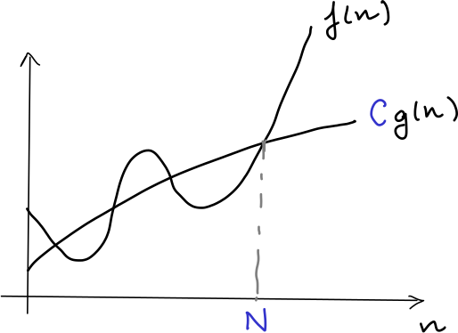
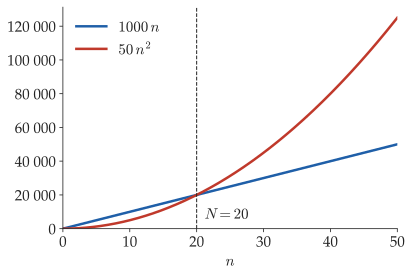

Informatique et Calcul Scientifique
Cours 7
Temps de parcours et implémentation
- Le temps qu’un algorithme prend dépend de son implémentation, mais la vitesse de croissance n’en dépend pas.
- On s’intéresse au comportement asymptotique, ce qui se passe quand \(n\) est grand. On a donc besoin d’un moyen de comparer des algorithmes dans ce cadre.

La notation \(\Theta(g)\)
Notation \(\Theta(g)\)
Soient \(f\) et \(g\) deux fonctions sur les entiers naturels. On dit que \(f\) a complexité \(\Theta(g)\) lorsque \(f\) et \(g\) croissent à la même vitesse pour \(n\) grand.
Plus précisément : pour \(n\) suffisamment grand, \(f(n)\) est toujours comprise entre deux multiples constants de \(g(n)\).

Par exemple, \(3n^2 + 250n + 30\) a complexité \(\Theta(n^2)\).
La notation \(\mathcal{O}(g)\) et \(\Omega(g)\)
\(f\) est \(\mathcal{O}(g)\) : “\(f\) croît au plus aussi vite que \(g\)” (borne supérieure)
\(f\) est \(\Omega(g)\) : “\(f\) croît au moins aussi vite que \(g\)” (borne inférieure)
\(f\) est \(\Theta(g)\) : les deux à la fois


Dans ce cours, on utilisera principalement \(\Theta\).
Définition formelle de \(\mathcal{O}(g)\)
Notation \(\mathcal{O}(g)\)
Soit \(g\) une fonction positive de \(n\). \(\mathcal{O}(g)\) est l’ensemble des fonctions positives \(f\) pour lesquelles il existe des réels \(C > 0\) et \(N > 0\) tels que \[\forall n > N, \quad f(n) \leq C \cdot g(n).\]
Notation. Pour \(f \in \mathcal{O}(g)\), on dit « \(f\) est \(\mathcal{O}(g)\) ».
Définition formelle de \(\Theta(g)\)
Notation \(\Theta(g)\)
\(\Theta(g)\) est l’ensemble des fonctions positives \(f\) pour lesquelles il existe des réels \(C_1, C_2 > 0\) et \(N > 0\) tels que \[\forall n > N, \quad C_1 \cdot g(n) \leq f(n) \leq C_2 \cdot g(n).\]
- Pour \(f \in \Theta(g)\), on dit « \(f\) est \(\Theta(g)\) », ou « \(f\) a complexité \(\Theta(g)\) ».
- On peut montrer que \(f\) est \(\Theta(g)\) si et seulement si \(f\) est \(\mathcal{O}(g)\) et \(\Omega(g)\).
Exemple : \(1000n\) est \(\mathcal{O}(n^2)\)
On cherche des réels \(C > 0\) et \(N > 0\) tels que \(1000n \leq C \cdot n^2\) pour tout \(n > N\).
\(1000n \leq 50\,n^2\) pour tout \(n \geq 20\) :
\(C = 50\) et \(N = 20\) conviennent.

\(1000n \leq 0{,}1\,n^2\) pour tout \(n \geq 10\,000\) :
\(C = 0{,}1\) et \(N = 10\,000\) conviennent aussi.

Il suffit de trouver un couple \((C, N)\) : plus \(C\) est petit, plus \(N\) doit être grand.
Retour aux algorithmes
- Supposons que nous ayons une implémentation donnée d’un algorithme \(A\).
- Soit \(T(n)\) le temps le plus long possible que \(A\) puisse prendre pour une entrée de taille \(n\).
- Le problème est que \(T(n)\) dépend de l’implémentation de \(A\). Cependant, la vitesse à laquelle \(T(n)\) croît ne dépend que de \(A\), pas de son implémentation ! Notre objectif est donc de trouver une fonction simple \(g(n)\) telle que \(T\) ait complexité \(\Theta(g)\).
Retour aux algorithmes
- Supposons que nous ayons une implémentation donnée d’un algorithme \(A\).
- Soit \(T(n)\) le temps le plus long possible que \(A\) puisse prendre pour une entrée de taille \(n\).
- Ici, par exemple, la complexité de
Algo Aest \(\Theta(n^2)\),
- Le problème est que \(T(n)\) dépend de l’implémentation de \(A\). Cependant, la vitesse à laquelle \(T(n)\) croît ne dépend que de \(A\), pas de son implémentation ! Notre objectif est donc de trouver une fonction simple \(g(n)\) telle que \(T\) ait complexité \(\Theta(g)\).